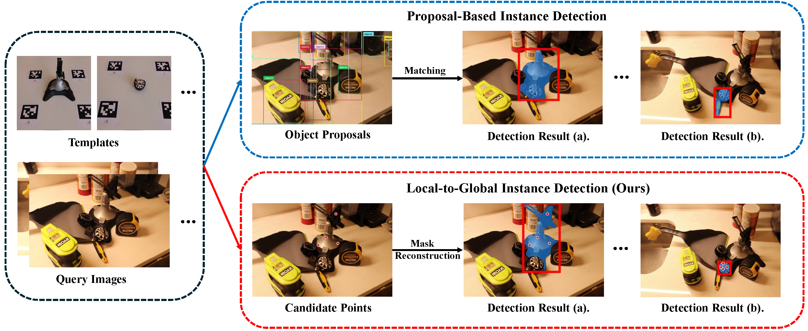
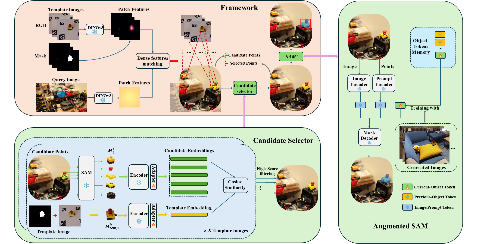
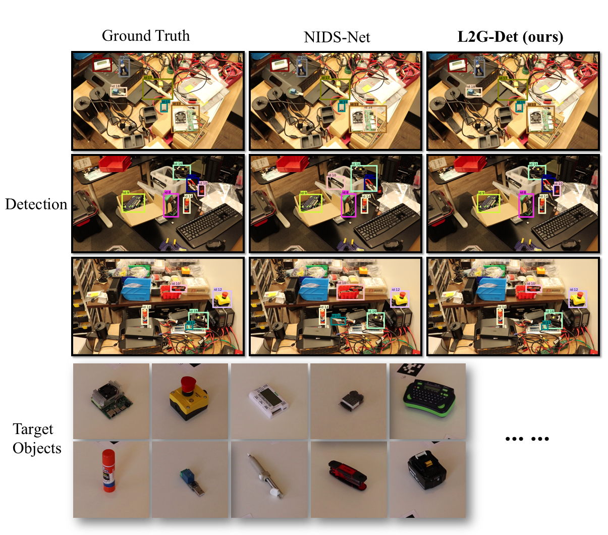
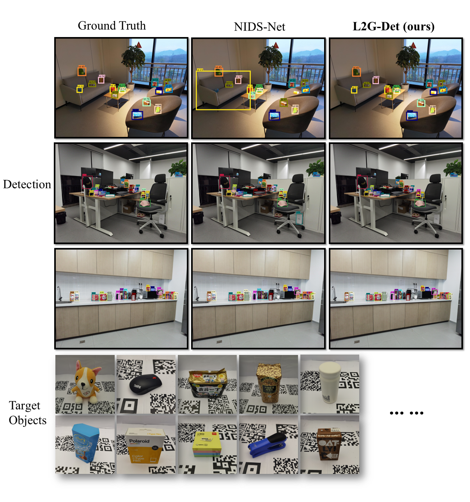

Detecting and segmenting novel object instances in open-world environments is a fundamental problem in robotic perception. Given only a small set of template images, a robot must locate and segment a specific object instance in a cluttered, previously unseen scene. Existing proposal-based approaches are highly sensitive to proposal quality and often fail under occlusion and background clutter. We propose L2G-Det, a local-to-global instance detection framework that bypasses explicit object proposals by leveraging dense patch-level matching between templates and the query image. Locally matched patches generate candidate points, which are refined through a candidate selection module to suppress false positives. The filtered points are then used to prompt an augmented Segment Anything Model (SAM) with instance-specific object tokens, enabling reliable reconstruction of complete instance masks. Experiments demonstrate improved performance over proposal-based methods in challenging open-world settings.
Conceptual comparison between object proposal-based instance detection methods and our local-to-global instance detection.

Overview of our L2G-Det framework for novel instance detection.It consists of a candidate selection module and an augmented SAM module. Only the adapters and object-tokens are learnable, while all other components are frozen.



A Fetch robot equipped with L2G-Det autonomously navigates cluttered indoor environments and stops upon detecting novel target objects in real time, demonstrating robust performance across 8 objects. Demo videos are shown below:
@misc{zhang2026l2gdet,
title = {From Local Matches to Global Masks: Novel Instance Detection in Open-World Scenes},
author = {Qifan Zhang and Sai Haneesh Allu and Jikai Wang and Yangxiao Lu and Yu Xiang},
year = {2026},
eprint = {2603.03577},
archivePrefix= {arXiv},
primaryClass = {cs.CV},
url = {https://arxiv.org/abs/2603.03577}
}Send any comments or questions to Qifan Zhang: Qifan.Zhang@utdallas.edu
This work was supported in part by the National Science Foundation (NSF) under Grant Nos. 2346528 and 2520553, and the NVIDIA Academic Grant Program Award.